Thief
Thief is a stealth video game developed by Eidos Montreal, published by Square Enix, and released in February 2014 for the PlayStation 3, PlayStation 4, Xbox 360, Xbox One and Microsoft Windows video gaming platforms. It is a revival of the cult classic Thief video game series of which it is the fourth installment. Initially announced in 2009 as Thief 4, it was later announced in 2013 that the game is a reboot for the series.
 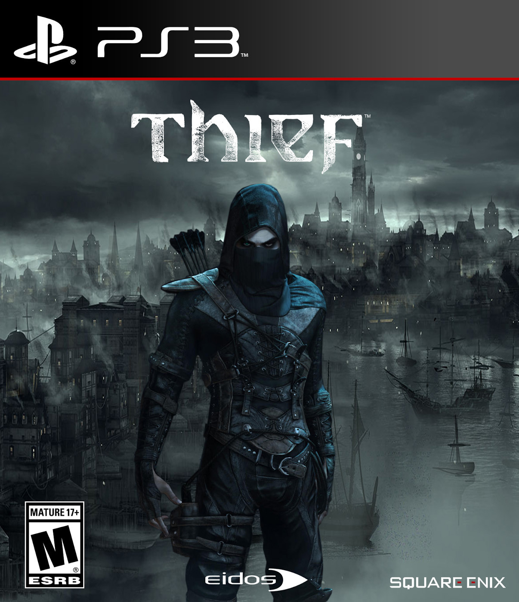
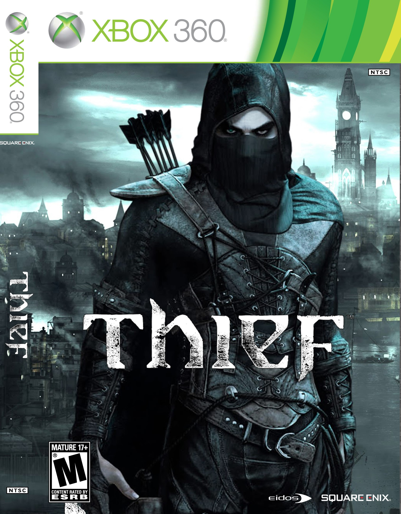
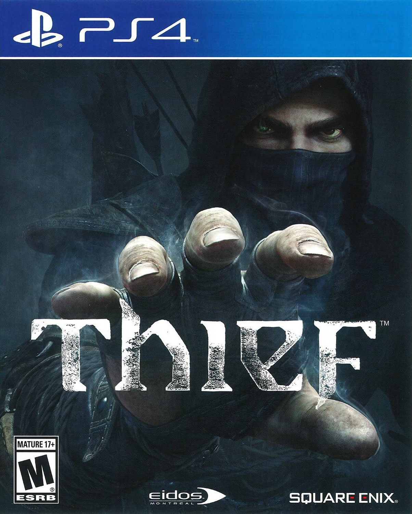
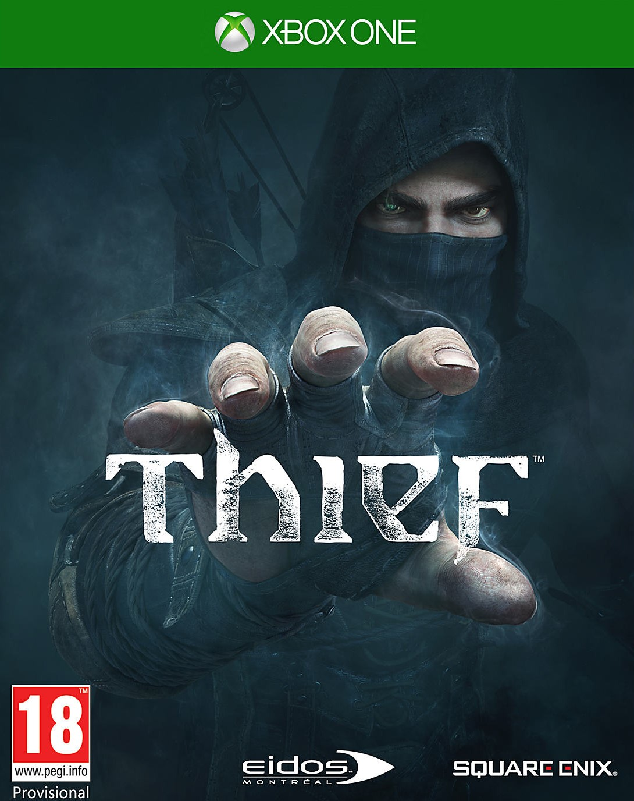
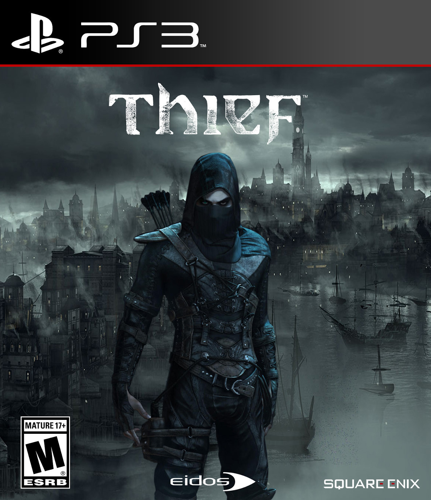
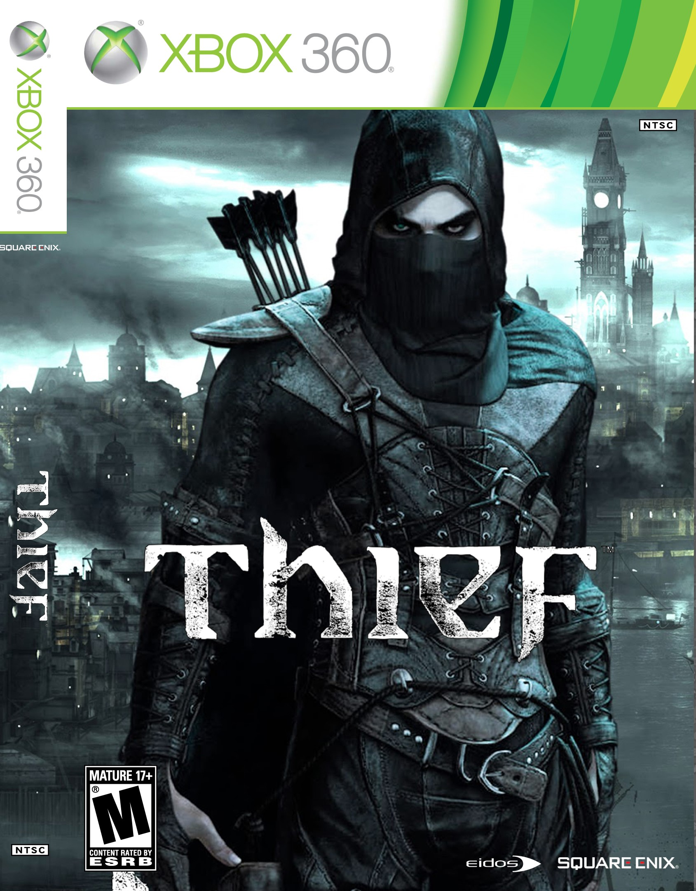
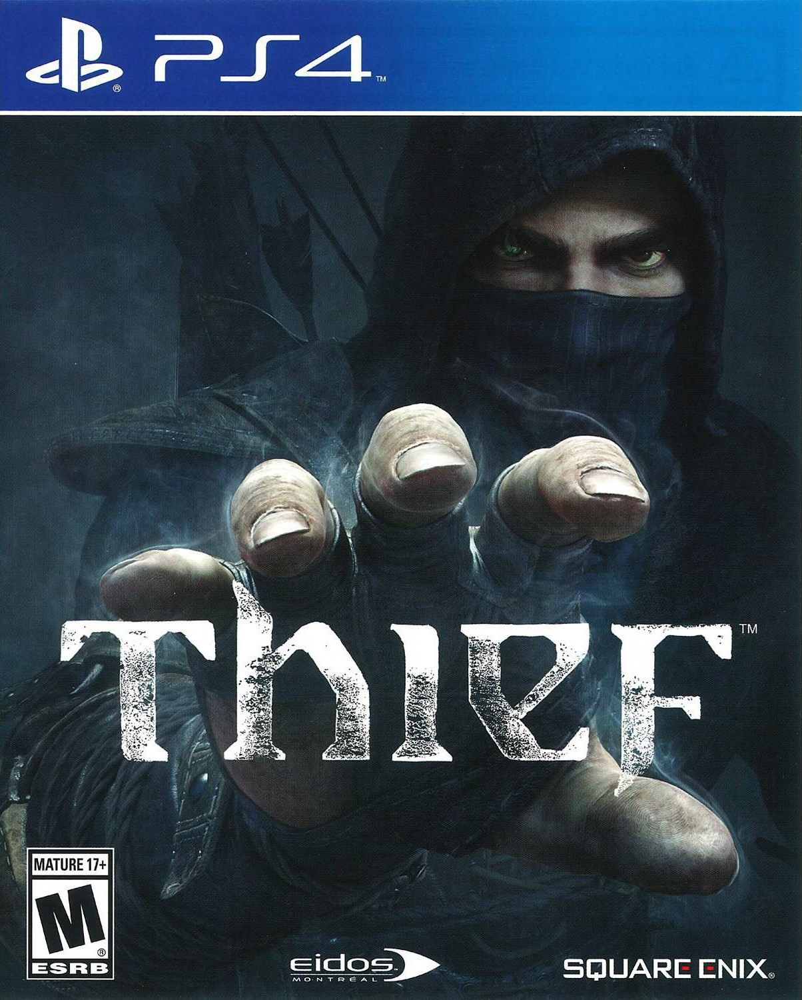
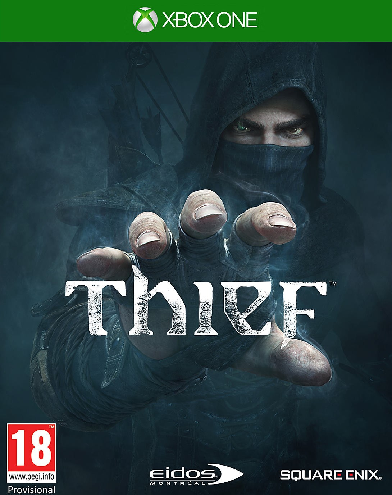
The game is set in 'The City', a dark fantasy world inspired by Victorian, Gothic, and steampunk aesthetics. Players control Garrett, a master thief who embarks on several missions focusing on stealing from the rich. Players may approach levels in a variety of different ways; players can choose the action oriented and lethal approach, where players will kill enemies on their way to their destination, using knives and takedowns, or opt for the non-lethal stealthy approach, where players avoid conflict altogether. Players also may choose which path to take to their destination, as each location contains several branching paths.
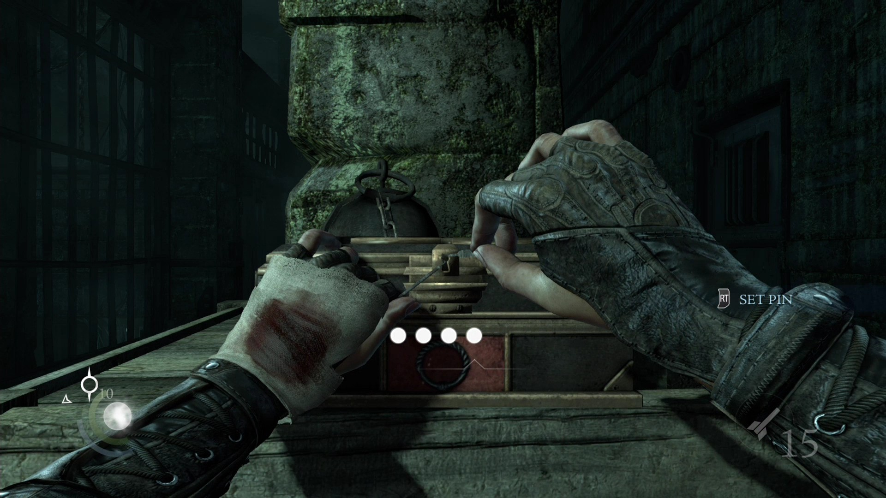Upon release, the game received a mixed critical reception, with critics praising its replay value and stealth gameplay, but criticizing the map layout and story.
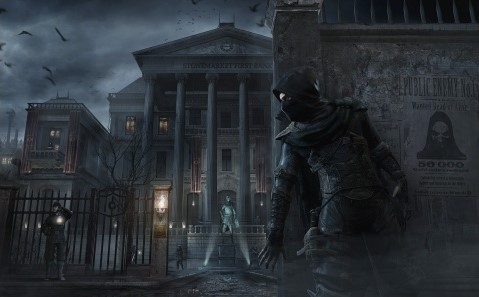Players control Garrett, a master thief, as he goes about a series of missions, most of which are focused around stealing from the rich. As with the previous games in the series, players must use stealth in order to overcome challenges, while violence is left as a minimally effective last resort.
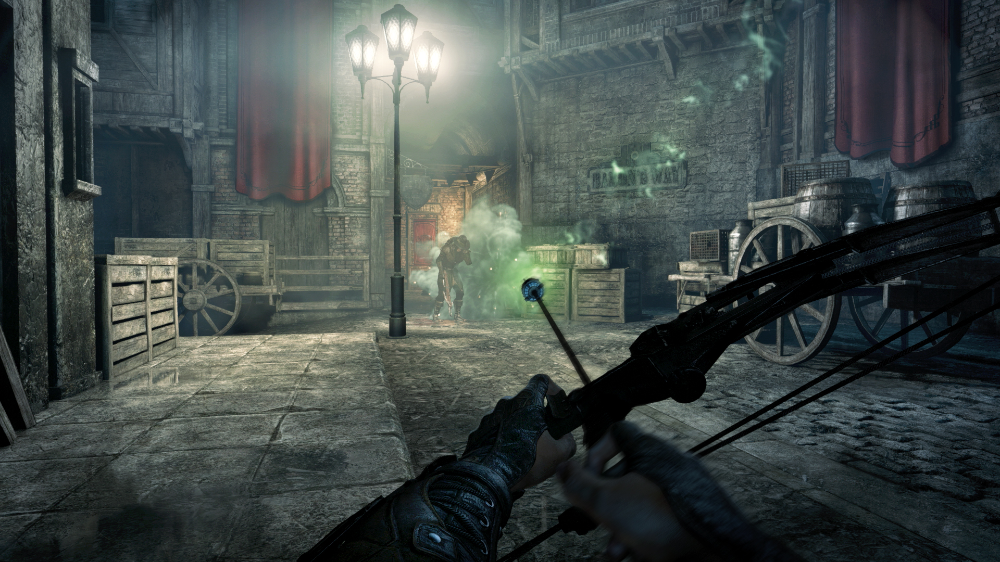There are a variety of routes through each level and players are able to utilize a variety of playing styles to traverse them. The game contains a variety of ways to distract or kill guards, such as barrels of oil which can be set alight. Levels also contain money and valuable objects which Garrett can steal; these are immediately converted into money which can be spent on equipment and upgrades. Garrett is also able to pickpocket guards and other characters. The player may evade guards by hiding in shadows or around corners and is able to peek around edges and through keyholes in order to track the movements of enemies. Once Garrett has been spotted, guards and other non-player characters will attempt to hunt him down. The developers have stated that the game's artificial intelligence is aware of the level design, and as such guards will know in advance of potential hiding spots that the player may be utilizing.
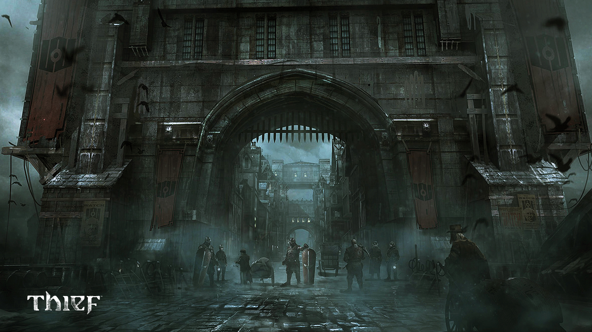| Review scores | |
|---|---|
| Publication | Score |
 |
7/10 |
|
|
7.5/10 |
|
|
3.5/10 |
 |
8/10 |
 |
6/10 |
 |
6.8/10 |